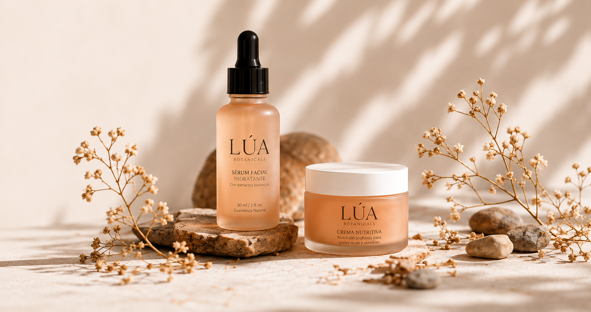
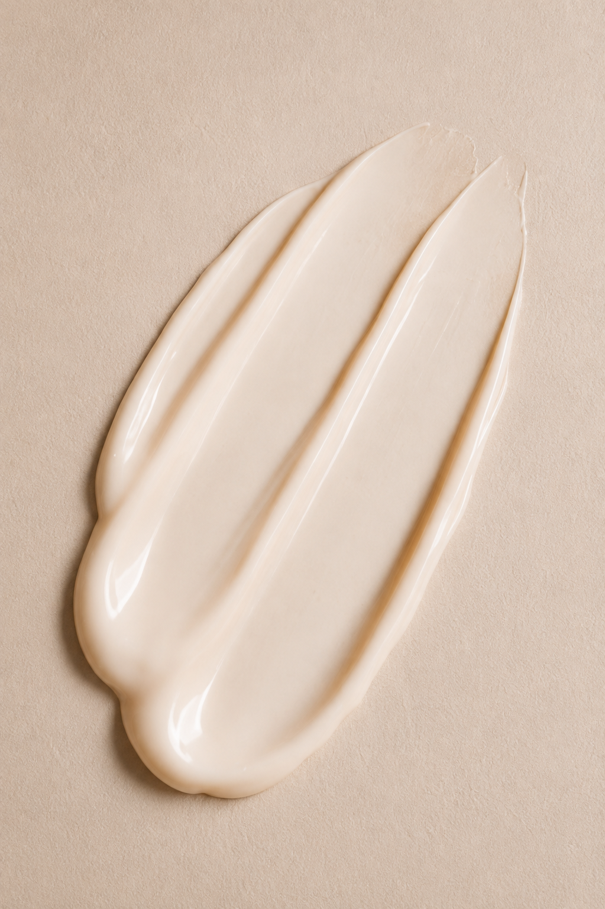
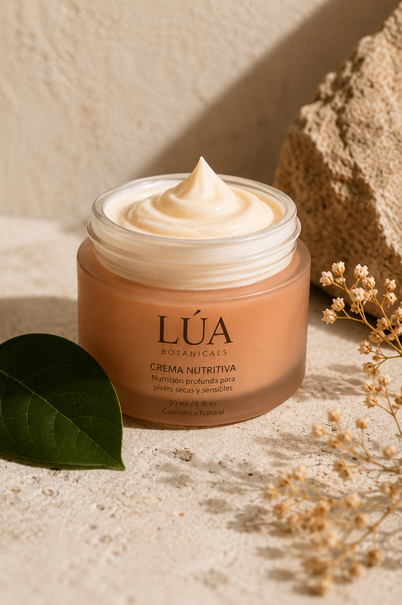
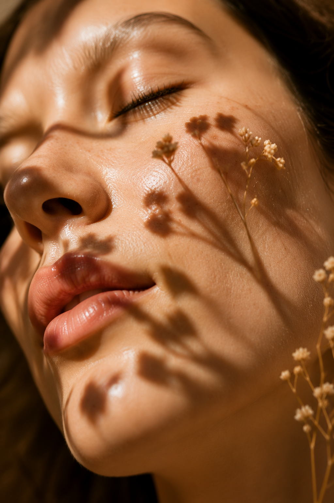
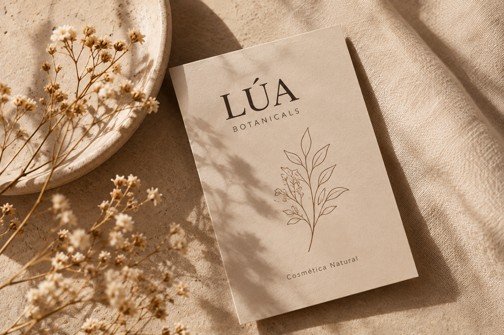
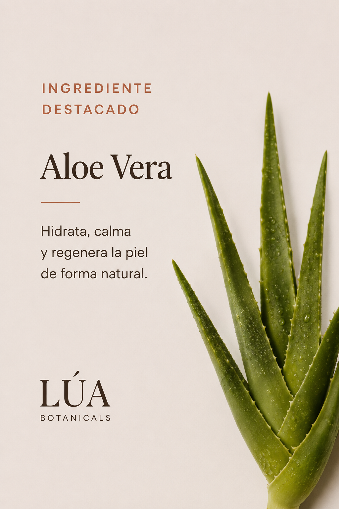
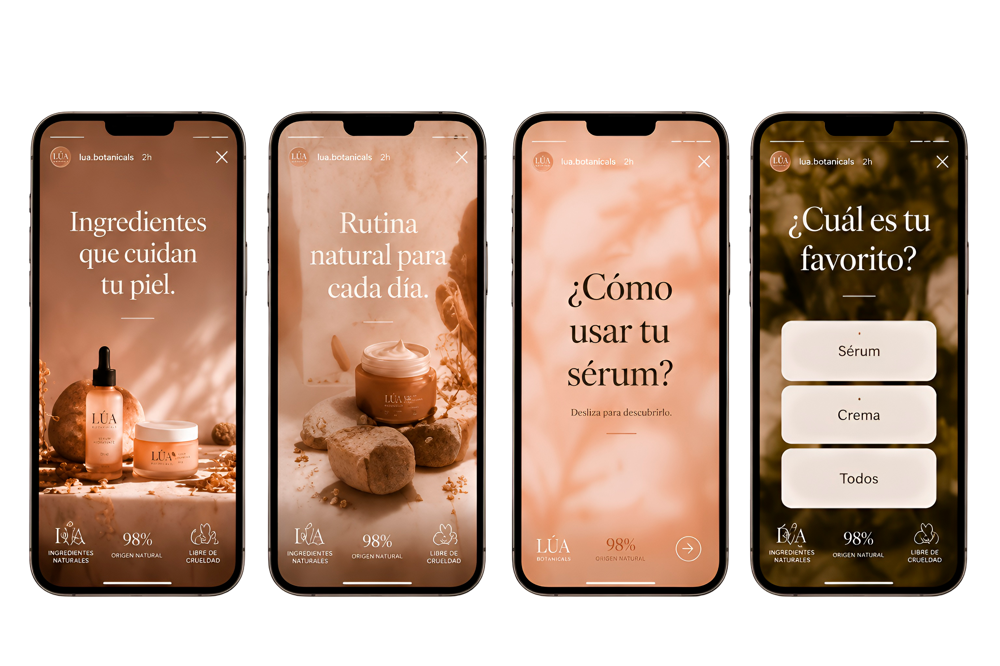
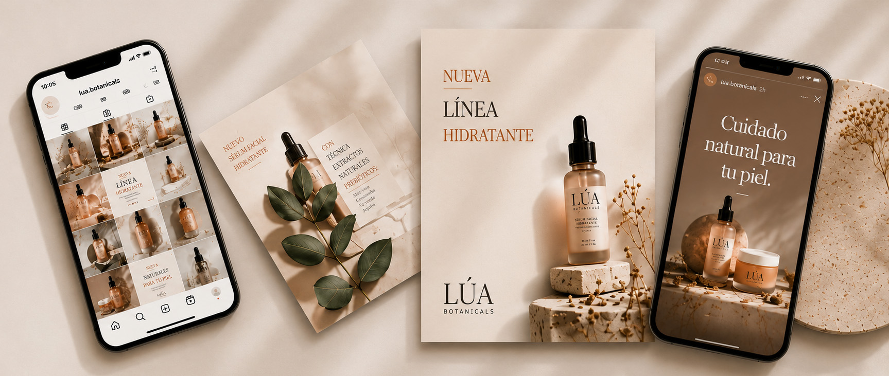

Identidad visual y sistema de contenidos para redes sociales de una marca de skincare natural, femenina y consciente.

La dirección visual combina tonos suaves, texturas naturales, luz cálida y composiciones minimalistas para transmitir calma, cuidado y autenticidad.




Diseñado para adaptarse a distintos tipos de contenido manteniendo una identidad visual coherente y reconocible.
Ver feed completo →



Se diseñan piezas para informar, inspirar y conectar con la comunidad, adaptando el mensaje a cada formato de la plataforma sin perder la identidad visual.

%20(1).png)
Las piezas se adaptan a distintos formatos y canales, manteniendo una estética coherente y reconocible en todo el feed.


LÚA transforma su esencia en un sistema visual coherente, atractivo y preparado para redes sociales.